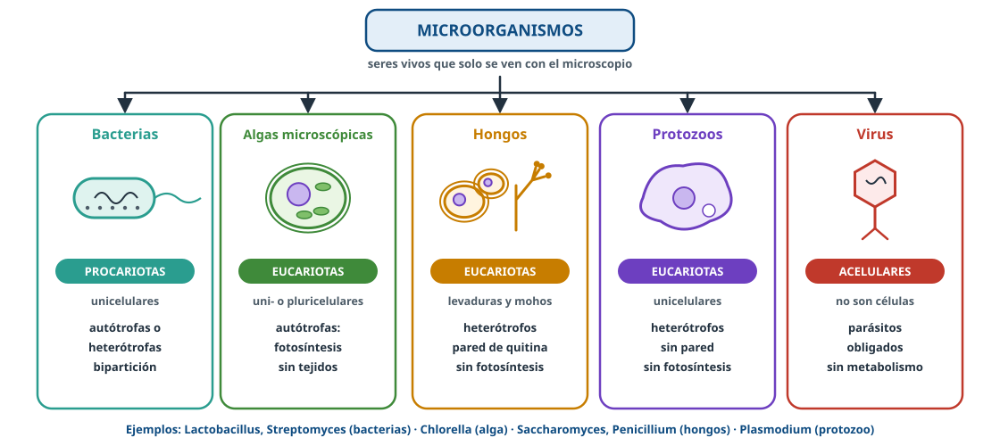
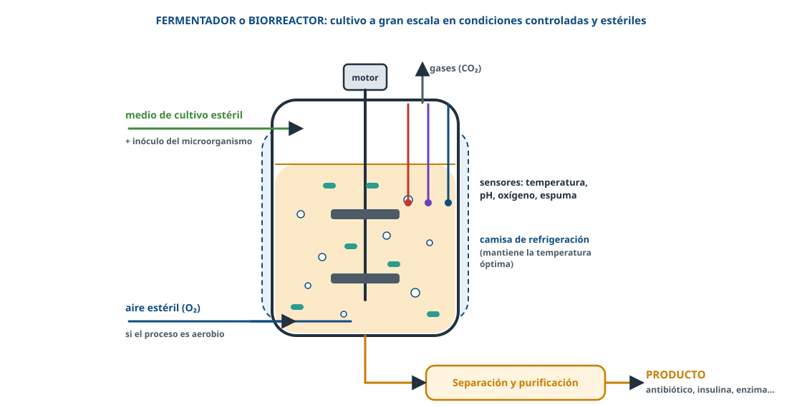
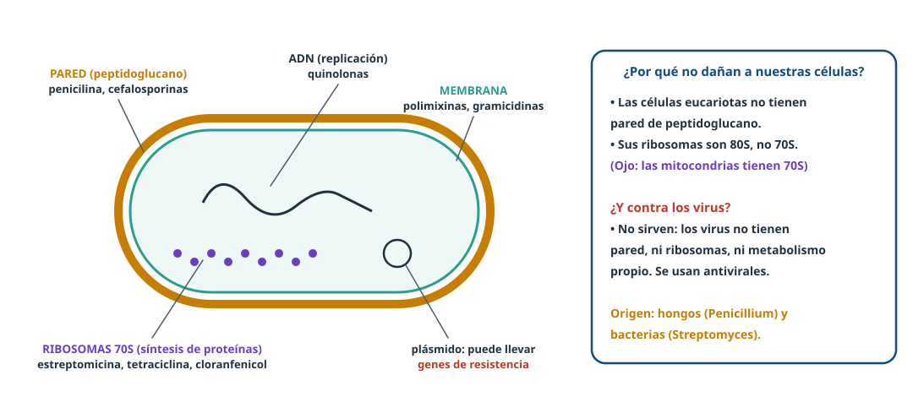
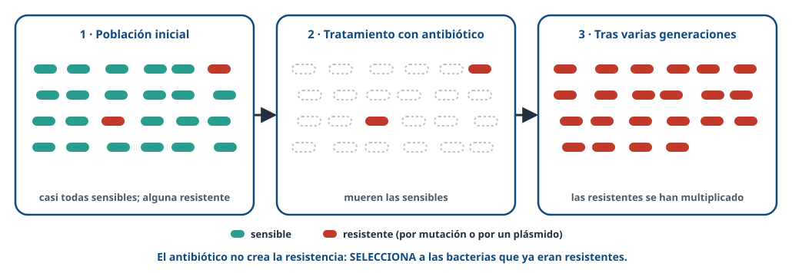
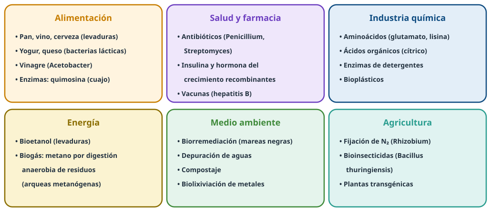
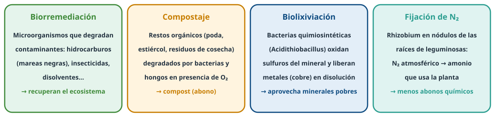
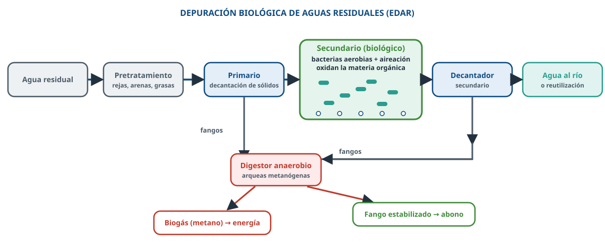

Microorganismos que fabrican alimentos y fármacos y limpian el medio ambiente.
Usa ← → o el espacio para avanzar · F para pantalla completa

¿Por qué microorganismos? Productos de interés, reproducción rápida, pocos requerimientos, fáciles de modificar.
| Producto | Microorganismo | Proceso |
|---|---|---|
| Pan, vino, cerveza | Levaduras (Saccharomyces) | F. alcohólica → etanol + CO₂ |
| Yogur, queso | Bacterias lácticas | F. láctica → ácido láctico |
| Vinagre | Acetobacter | Etanol → ácido acético |
🥛 El ácido láctico desnaturaliza y coagula las proteínas de la leche.
🧂 Salazón y almíbar: medio hipertónico → los microorganismos se deshidratan por ósmosis.


Mal uso (contra virus, tratamientos incompletos) → más resistencias.


Biorremediación: usar seres vivos para recuperar un ecosistema alterado por contaminantes.

Repasa los apuntes y practica en Entrenamiento de BioCelia.